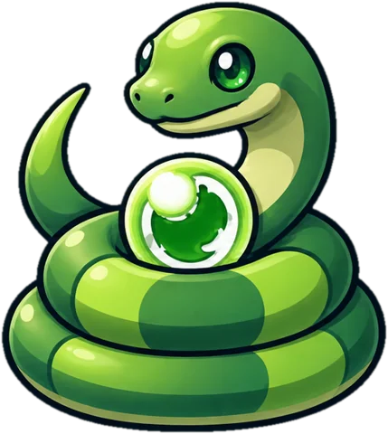

 Grass
Grass Fire
FireTap a stage to read its story.
Vyrule is a compact green snake coiled neatly on itself, its scales a bright leaf-green with a vivid teal eye that glows softly. A glowing green orb sits at the center of its coil like a living seed it is keeping warm. In the cool nights of the Sand Dunes it coils tighter to conserve heat, humming a faint vibration that plants can feel underground. It was here, half-buried in sand, when the first guardian words were spoken.
Field note: Vyrule's center orb heats up exactly at sunrise every morning - Sand Dune merchants use them as natural alarm clocks.
Sand Dunes. Vyrule and its family are found in the Sand Dunes. See everyone who lives there.
Share a Bond Food that matches its types to become friends. Vyrule loves:
A Bond Food is not a trick. It joins your spirit with the Kimuro's spirit, and only when it chooses you.
Print the Kimuro adventure packs: mazes, cards, a board game and Bond Mark medals.
See the printable packs